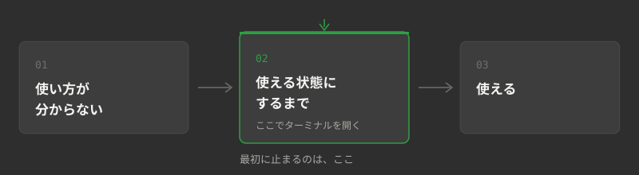

真っ黒い画面の
ターミナルを
触るのが怖かった

最初の壁は、操作でも費用でもなかった
社内で最初にAIを触ったのは、普段は現場に出ている人間です。手すりや床の見切りを付けるのが仕事で、パソコンに向かう職種ではありません。
最初に手が止まったのは「AIを使うこと」ではなく、その手前でした。自分の環境でAIを動かせるようにする段階で、黒い画面（ターミナル）を開く必要が出てきます。
その人間に、AIを使い始めた頃に一番詰まったところを聞きました。返ってきた答えはこうです。
最初の設定構築。初心者はターミナルを開くのも怖い。
「AIの使い方が分からない」ではありません。「AIを使える状態にするまで」でした。
ここは、AI研修の案内ではあまり語られない部分だと思います。何を聞けばいいか、どう指示を書くか——そういう話は、この壁の先にあります。手前にあるのは、その画面を開いていいのかどうかが分からない段階です。
この段階で止まると、本人は「自分には向いていない」と受け取ります。実際には、向き不向きの手前の話です。案内する人がいないことが、壁になっていました。
越えたあとに起きたこと
その後、同じ人間がスマートフォンのアプリを作ってGoogle Playで公開しました。2026年8月25日です。コードは一行も書いていません。
作ったのは、家に帰ることを家族に伝えるためだけのアプリです。会社の業務システムではありません。身のまわりの小さい不便を、自分で解けるところまで来た、という話です。
順番を書いておきます。アプリを作れる人だったから壁を越えられた、という話ではありません。現場で金物を付けている人間が、環境の設定でつまずき、そこを越えたあとにここまで来ました。
私たちの経験から言える、1人目を作る条件
ここまでが事実の記録です。ここからは、その経験から私たちが考えていることを3つ書きます。
（1）最初の関門は「使い方」ではなく「使える状態にするまで」だと想定しておく
研修の設計でも導入の段取りでも、ここを本人任せにすると止まります。逆に言えば、ここさえ越えれば、あとは本人が進みます。
（2）詰まったときに聞ける相手を用意する
社内でAIが広がるかどうかは、何人が研修を受けたかよりも、詰まったときに聞ける人が社内にいるかどうかで決まる——というのが、私たちの実感です。1人目は、その役割を持つ人になります。
（3）小さい業務を1つ選んで、そこだけやる
私たちが最初に選んだのは領収書の仕分けでした。2026年1月から6月までに扱った400件で、1か月あたりの所要時間が平均170分から20分になっています。
その業務を選んだのは、次の3つがそろっていたからです。1.手順がある程度決まっている 2.処理結果をあとから確認できる 3.担当者の経験や、その場の判断に頼る場面が少ない。この3つがそろうほど、小さく試して効果を比べやすくなります。
逆に、最初から複数の業務を同時に変えると、時間が減った理由も、かえって手間が増えた原因も切り分けられなくなります。全社の業務を見渡してから始めようとすると、たいてい始まりません。
自社のどの業務が当てはまるかを選ぶ手順は、建設業のAI導入、最初の1業務はどう選ぶ？に3ステップでまとめています。棚卸し・採点・候補を1つ決める、の順です。紙とペンがあれば今日から進められます。
うまくいかなかったことも書きます
AIを業務に入れて、失敗もしています。
取引で採算が割れそうなときに止める仕組みを、AIに作らせました。止めた件数はずっと0件でした。うまく回っていると思っていました。
実際には、一度も止められない作りになっていました。0件だったのは問題がなかったからではなく、仕組みが動いていなかったからです。
翌日、社内のルールを1つ増やしました。見張りを作ったら、わざと引っかかるデータを1本通して、実際に止まるのを見るまで完成にしない。0件という数字は、動いている証拠にはなりません。
こういうことがあるので、私たちは「自動化できないものは『できない』と言う」を方針にしています。AIに任せられる範囲は、思っているより狭いです。そして、任せられない部分を先に見極めたほうが、結果的に早く進みます。
どの業務なら任せやすいかは、AIが向いている業務・向いていない業務の見分け方で、手順の型・確認記録・その場の判断の3軸にして整理しています。自社の業務を当てはめて判定できる形にしてあります。
2人目からは、同じ壁を越えなくていい
1人目が止まった場所は分かりました。次の人を同じ場所で止めないこと——研修をやるなら、そこが要ると考えています。
全6回で、最初の1回は「AIを触ってみる」から始まります。業務メールや議事録の要約を、実際に手元で動かすところからです。そのあと、指示の書き方、事務作業への適用、表計算との連携、と段階を上げていきます。
最終回では、受講した方の実際の業務をひとつ自動化します。あわせて、セキュリティ・属人化・保守という運用の壁も、この回で扱います。動かして終わりではなく、動かし続けられるかまでを見る回です。
これは研修の設計です。受講者の実績データは、実施後にこのページで公開します。現時点ではまだありません。
関連記事: 建設業のAI導入、最初の1業務はどう選ぶ？ ／ AIが向いている業務・向いていない業務の見分け方 ／ コラム一覧へ
中芝 悠太
内装金物の職人として現場に立ちながら、昼は現場・夜はAI。自社の領収書の仕分けの時間を約9割短縮した実体験から、このチームを立ち上げた。現場の話が通じる窓口担当。
いま詰まっている場所を教えてください。
社内にAIを使える人がいないとき、必要なのは全員の研修ではありません。1人目をどう作るかです。30分の無料相談で、自動化できる箇所とできない箇所を正直にお伝えします。いまの業務の棚卸しも、その場で一緒に行います。オンラインでも構いません。「自社の仕事で使えるのか」という段階の相談で構いません。導入を決めていなくても大丈夫です。
無料相談へ →中小企業の場合、研修は人材開発支援助成金の対象となることがあります（要件・審査あり。支給を保証するものではありません）。